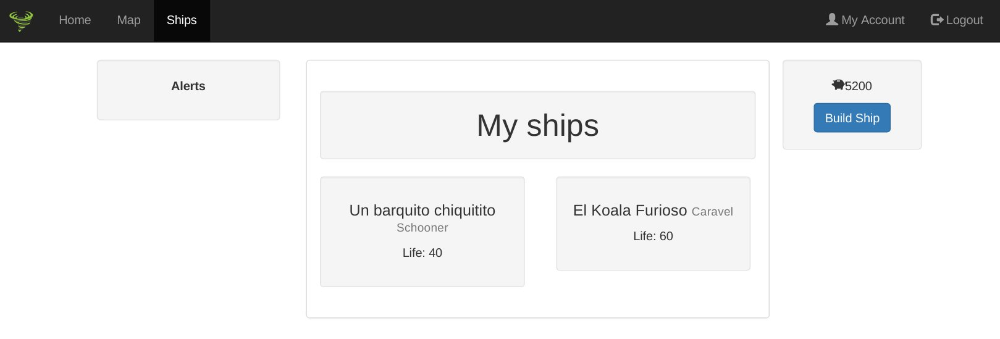
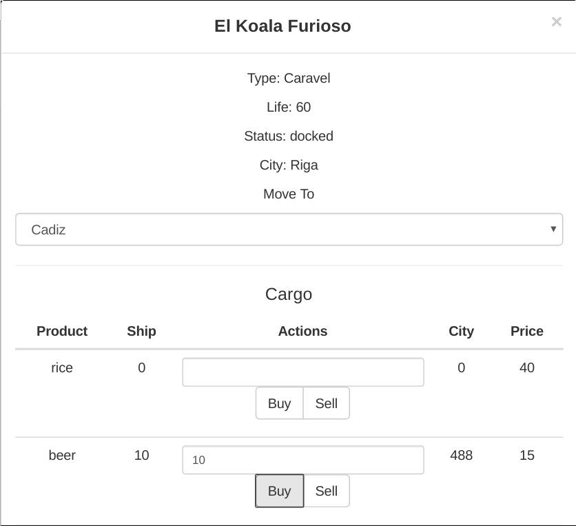
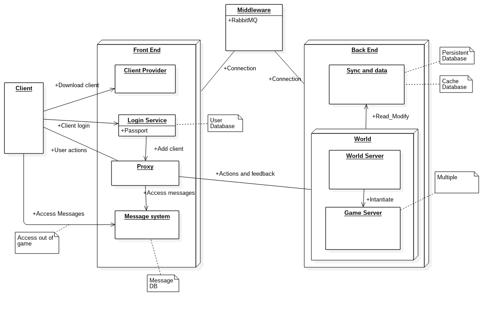
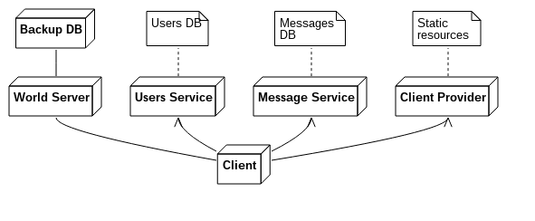
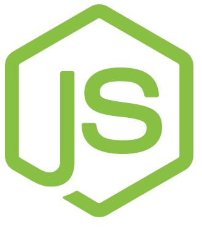
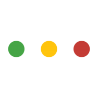

class: center, middle # Maelström _**Andrés Ortiz Corrales**_ _<https://github.com/demiurgosoft>_ <img src="resources/logo.png" width="400px"> --- layout: true class: center background-image: url(resources/octokoala_watermark.jpg) --- # "Apps" en la actualidad  -- count: false  **<== Sí, esto existe** --- # Y los videojuegos?  --- # Y los videojuegos? ### Muchos juegos Multijugador -- count:false ### Pero pocos "Masivos" (MMO) ??? Explicar MMO MMO > 100 jugadores -- count:false  _World of Warcraft, existoso MMOG_ --- # Por qué no hay más MMO? --  --- layout: true class: left background-image: url(resources/octokoala_watermark.jpg) --- # Maelström in a nutshell Prototipo Open-Source de un videojuego **Multijugador Masivo Online** de estrategia comercial * **GitHub:** <https://github.com/demiurgosoft/maelstrom> * Múltiples repositorios * **Licencia:** GNU AGPL-3.0 --- background-image:none # Capturas de pantalla </img> --- count: false background-image: none class: center,middle </img> --- # El Problema * Software privativo, sin soluciones Open * Tecnologías antiguas * WoW (2004) * Ogame (2002) * Clash of Clans (2012) * Sin _framework_ ni tecnología especifica disponible para el desarrollo **MMO =/= Multiplayer** --- # Objetivos El proyecto completo posee tres objetivos 1. Estudiar y analizar el problema y proponer soluciones al desarrollo de un MMO * Casi todo el software relacionado es privativo y sin documentación disponible 2. Desarrollar un prototipo con tecnologías **modernas**, **extensibles** y **abiertas** 3. Finalmente, proponer una base tecnológica o _framework_ sobre el que facilitar y abaratar el desarrollo de videojuegos MMO. --- background-image: none # Arquitectura * Arquitectura Web Orientada a Servicios <img src="resources/mono-micro.png" width=90%></img> _Microservice Architecture, Fowler_ --- count: false class: middle, center background-image: none </img> _Arquitectura planteada_ --- count: false class: middle, center background-image: none </img> _Prototipo simplificado_ --- # Arquitectura: Servicios * **Users** * Gestión de Usuarios * <https://github.com/demiurgosoft/maelstrom-users> * **World** * Servidor del juego * <https://github.com/demiurgosoft/maelstrom-world> * **Web** * Proveedor de cliente web * <https://github.com/demiurgosoft/maelstrom-web> * **Messages** (_En desarrollo_) * Gestión de mensajería interna entre usuarios * <https://github.com/demiurgosoft/maelstrom-messages> ---------------- **Repositorio Principal:** <https://github.com/demiurgosoft/maelstrom> ??? Comentar pros de los SOA: * Extensibilidad * Escalabilidad * Especialización --- # Herramientas </img> <img src="resources/express.png" height=50></img> Desarrollo del servidor con _javascript_, **Node.js** y el framework **express** ---- <img src="resources/mongodb.png" height=120></img> </img> Base de datos principal con **MongoDB** y **mongoose** ---- </img> <img src="resources/ajax.png" height=80></img> Comunicación bidireccional ligera mediante el framework de websockets **Socket.io** y con **Ajax**. --- count:false # Herramientas <img src="resources/react.png" height=90></img> <img src="resources/jquery.gif" height=90></img> <img src="resources/bootstrap.png" height=90></img> Cliente desarrollado con **React**, **JQuery** y **Bootstrap** ---- <img src="resources/browserify.png" height=90></img> </img> Empaquetamiento del cliente con **browserify** y templating con **ejs** --- count: false # Herramientas <img src="resources/github.png" width=10%></img> Desarrolo abierto en **GitHub**, seguimiento mediante **issues** y **milestones** en cada repositorio ----- <img src="resources/travis.png" width=10%></img> <img src="resources/chai_mocha.png" width=20%></img> </img> </img> Integración continua con **Travis.ci**, tests con **mocha** y **chai**, cobertura con **coveralls**, análisis de dependencias con **gemnasium** ---- <img src="resources/npm.png" width=15%></img> Gestión de paquetes y despliegue con **npm** --- # Estado Actual _5 Junio 2016_ [](https://travis-ci.org/demiurgosoft/maelstrom) * 6 repositorios públicos * **466 commits** entre todos los repositorios * **246 issues**, 202 cerrados * **19 milestones**, 15 completados * **5700 LOC** aproximadamente * 45 tests implementados en 2 servicios con cobertura del 80% de líneas * Contribuciones de otras 3 personas * Demo desplegada en **Heroku** y **Openshift** * 9 meses de desarrollo --- class: center,middle # Demo <http://maelstrom-mmo.herokuapp.com/> <https://github.com/demiurgosoft>